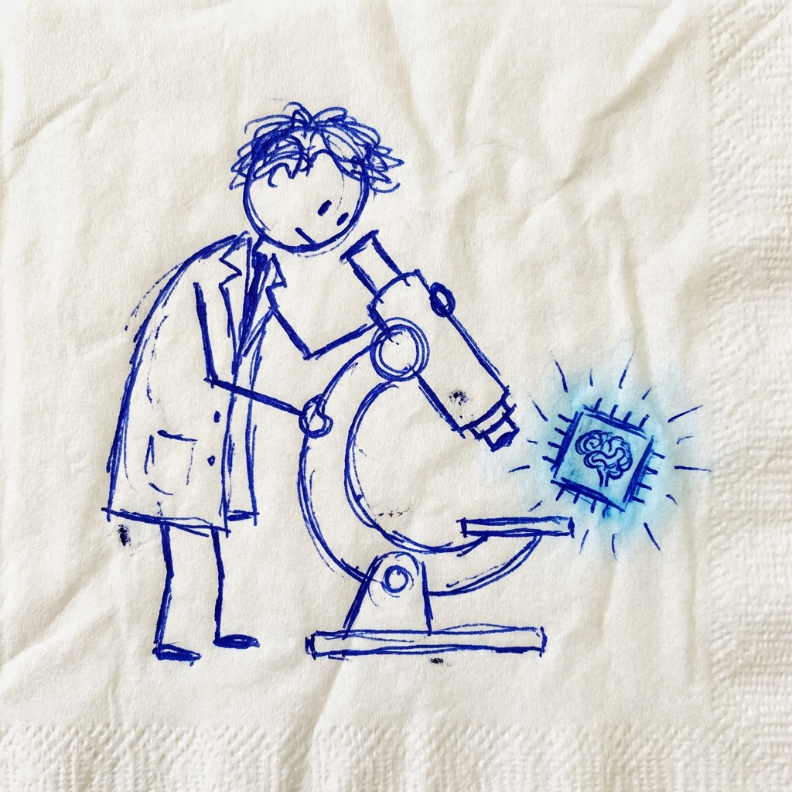
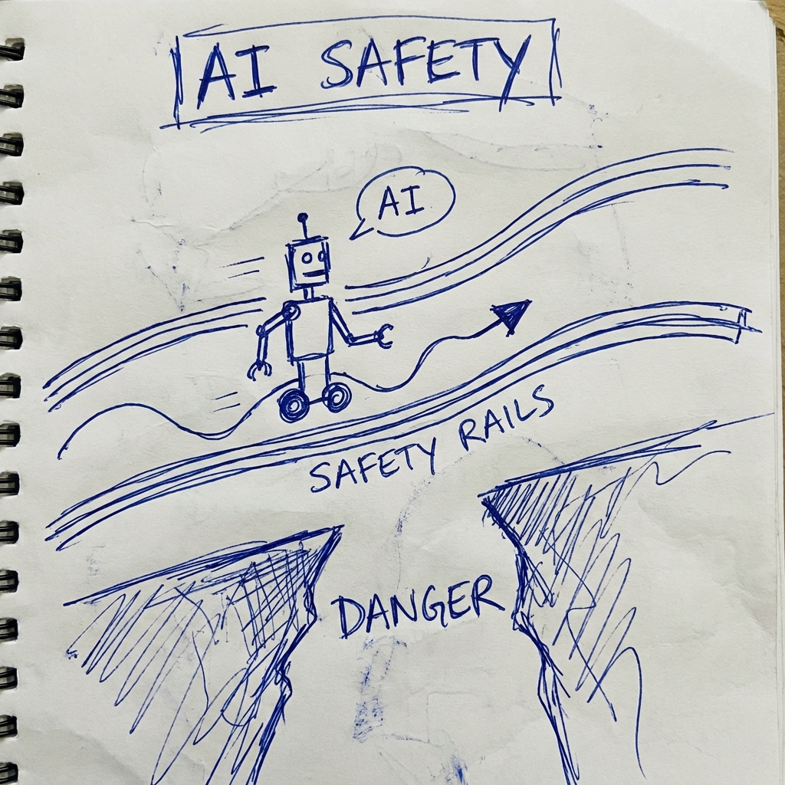

Trước khi chúng ta thả một AI ra thế giới thực...
Chúng ta cần quét não nó trước.

Không chỉ hy vọng nó không ngã.
Chúng ta xây rào chắn vật lý cho tâm trí nó.
Kỷ nguyên của "Black Box AI" phải chấm dứt.
Chúng ta không thể tin tưởng thứ gì đó mạnh hơn mình...
nếu chúng ta không hiểu nó hoạt động thế nào.
1. Tìm thấy feature "Bạo lực".
2. Vặn nút âm lượng xuống 0.
3. AI trở nên hiền lành.
(Đây không phải khoa học viễn tưởng. Anthropic đã làm được.)
"An toàn được chứng minh bằng toán học"
Chứ không phải an toàn bằng "lời hứa" của công ty Tech.
LLMs không phải là phần mềm thông thường.
Chúng là những thực thể tiến hóa, phức tạp và hỗn độn.
Bên trong chúng có những "mạch điện" tư duy.
Từ Cầu Cổng Vàng... cho đến khả năng Nói Dối.
Interpretability là cơ hội tốt nhất để chúng ta hiểu và kiểm soát chúng trước khi chúng vượt quá tầm kiểm soát.
"Chúng ta đang bắt đầu vẽ được tấm bản đồ
cho vùng đất xa lạ mang tên trí tuệ nhân tạo."
Đây mới chỉ là bề nổi của tảng băng chìm.
Follow @lenguyen.codeai